Feed-forward geometry models such as VGGT and pi3 reconstruct dense scene geometry from images in a single pass and are being deployed on robots, where they fail silently: they confidently predict geometry they never observed. Every uncertainty signal shipped with these models, and in the methods built on them, is aleatoric heteroscedastic self-report, and none is calibrated: no expected calibration error (ECE), no reliability diagrams. We study the missing epistemic signal.
From a frozen backbone we read a per-pixel disagreement signal D, the spread of the predicted surface across resampled input-view subsets, and ground it with exact covisibility-support S from depth and pose. With three frozen backbones and no learned head, D predicts per-pixel error and beats or matches the native aleatoric confidence at failure detection across all three (AUROC up to 0.85 versus 0.63). We report the first ECE numbers for feed-forward geometry uncertainty: the native confidence is badly miscalibrated under domain shift (ECE up to 0.42 synthetic-to-real), while a simple post-hoc calibration of D reaches ECE about 0.02 on all three backbones. As an application, D flags the free-space hallucinations a robot would plan into (collision-risk AUROC 0.91 versus 0.73), and its most-uncertain 10% of the map holds about a third of the total error (three times random), so test-time refinement spent where D is high recovers most of the achievable error reduction at a fraction of the cost. Evaluation is strictly cross-dataset on ETH3D, 7-Scenes, and TUM RGB-D.
We never fine-tune the backbone. One forward pass gives the native confidence A (the aleatoric baseline). From N resampled input-view subsets we read the disagreement D, a single-model epistemic estimate native to a multi-view model. We ground D physically with covisibility-support S, how many input views actually observe each surface, computed exactly from depth and pose. A post-hoc calibration step (isotonic, no learned head) turns D into a calibrated trust map that drives failure detection, collision-risk flagging, and trust-filtered map fusion.
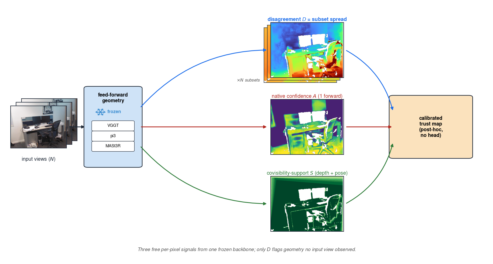
Across ETH3D, 7-Scenes, and TUM RGB-D: the true per-pixel error, the disagreement D (ours), and the native confidence shown as uncertainty. D tracks the true error; the native confidence does not. Each card states its own worst-10% failure-detection AUROC, so the comparison is visible per image. Across all 111 scored references, D beats the native confidence on 74% of them (mean AUROC 0.79 vs 0.65, mean Spearman with error 0.43 vs 0.16).
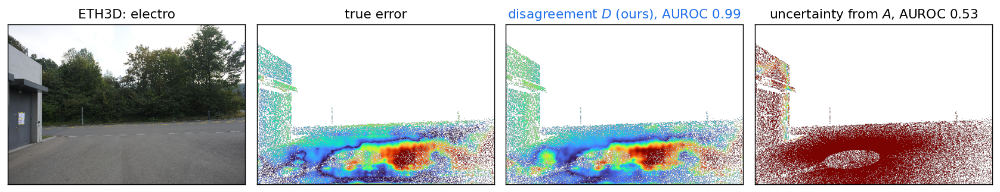
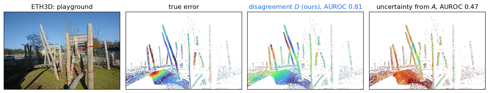
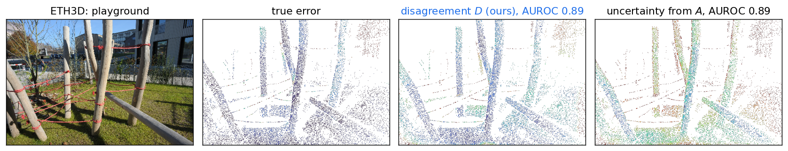
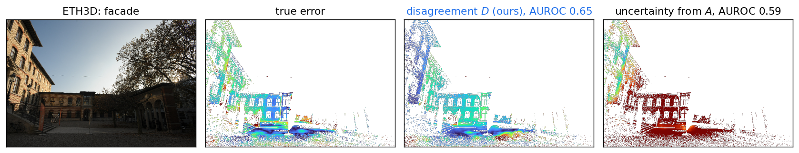
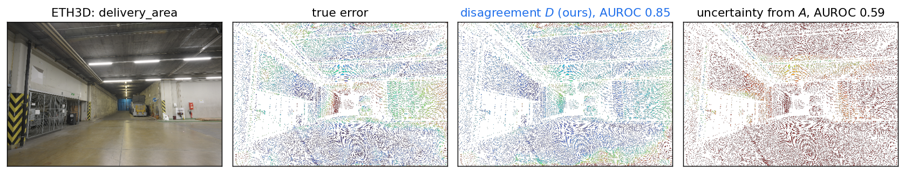
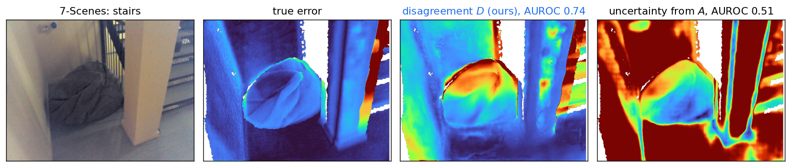
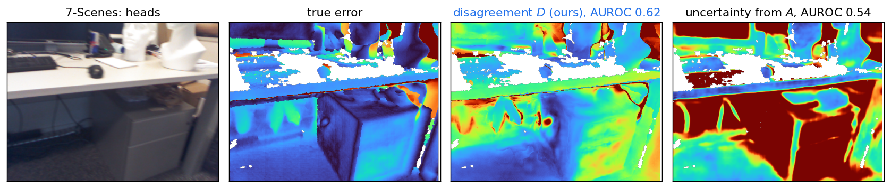
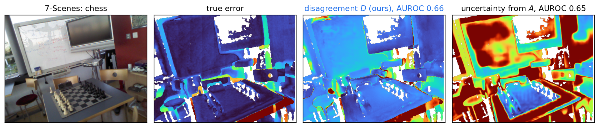
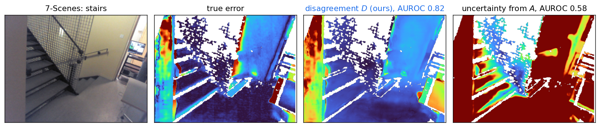
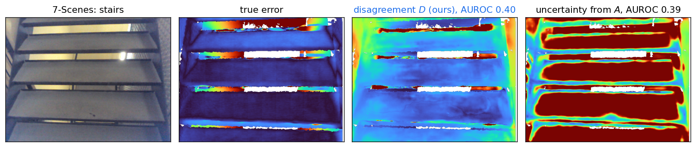
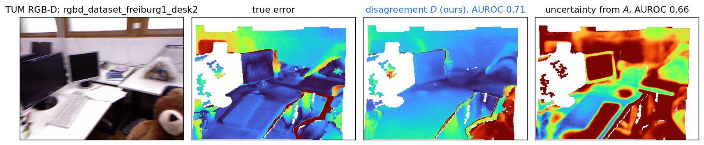
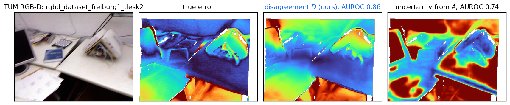
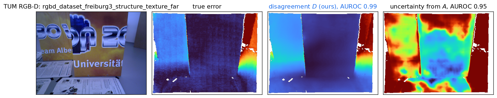
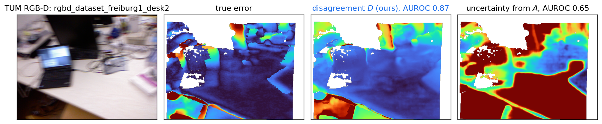
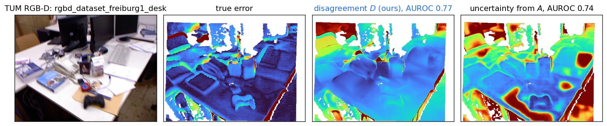
Click any card to enlarge.
The first reliability diagrams for feed-forward geometry uncertainty. The native aleatoric confidence is badly miscalibrated synthetic-to-real (ECE up to 0.42); a post-hoc calibration of D reaches ECE about 0.02 on all three backbones.
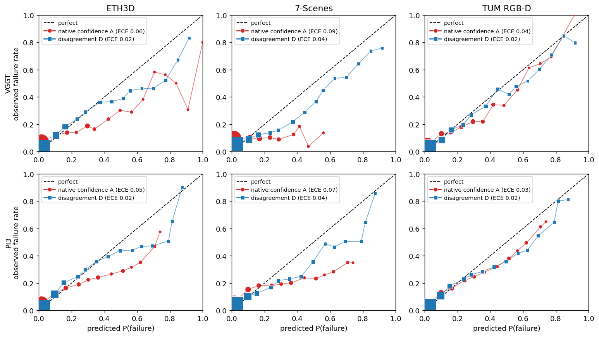
The most-uncertain 10% of the map holds about a third of the total error, three times its share. A test-time refiner spending compute where D is high recovers most of the achievable error reduction at a fraction of the cost.
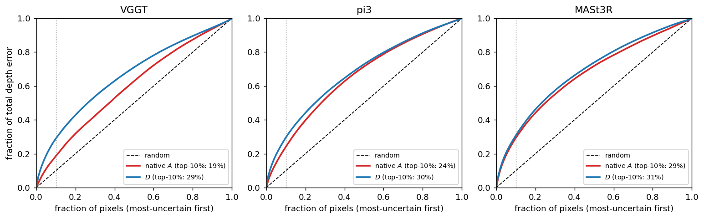
D flags the hallucinated free space a robot would plan into (collision-risk AUROC 0.91 versus 0.73 for the native confidence).
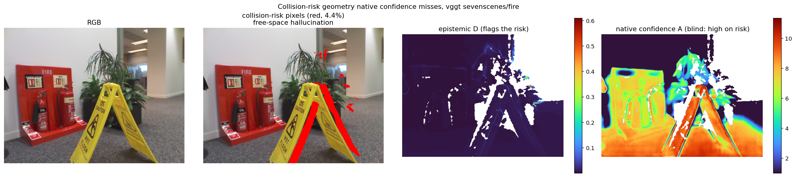
Dropping the least-trusted points by D before fusing views into a point cloud cuts map error against the ground-truth cloud, more than dropping by the native confidence.
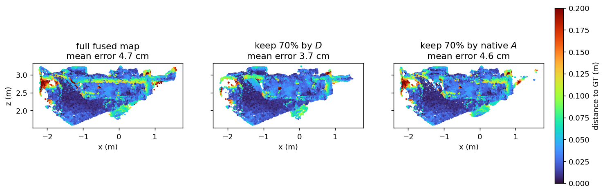
The N forward passes D costs may be unnecessary: the epistemic signal is internally encoded. A single-pass linear probe on VGGT's frozen aggregator tokens reaches failure-detection AUROC 0.878 once it reads block 17 (two-thirds through the aggregator), above the N=8 disagreement D (0.831) and far above the native confidence (0.685), leave-scene-out over 15 scenes. This is the geometry analogue of semantic-entropy probes for language models, and it points to a single-forward, early-exit deployment. One forward, not N.
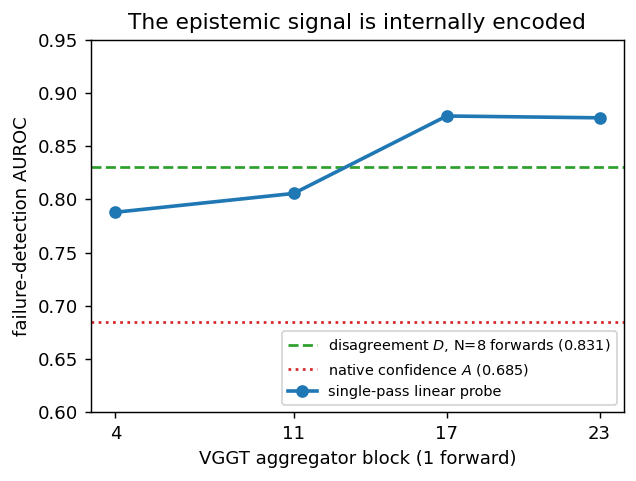
Under blur (geometry intact, appearance degraded) the native confidence collapses everywhere, while D keeps its structure and rises inside the occluded region. A reacts to appearance; D to information content.
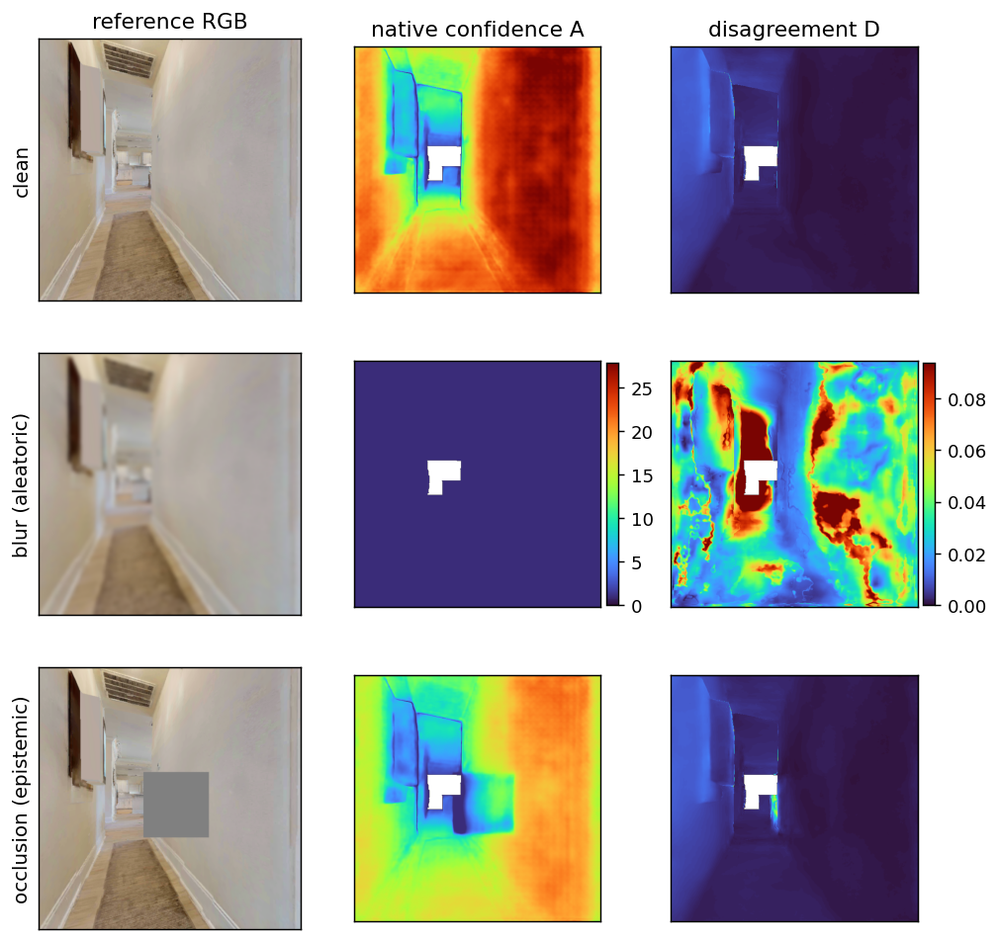
@inproceedings{anonymous2026geotrust,
title = {Calibrated Epistemic Uncertainty for Feed-Forward Geometry},
author = {Anonymous},
booktitle = {Under review at WACV},
year = {2026},
}